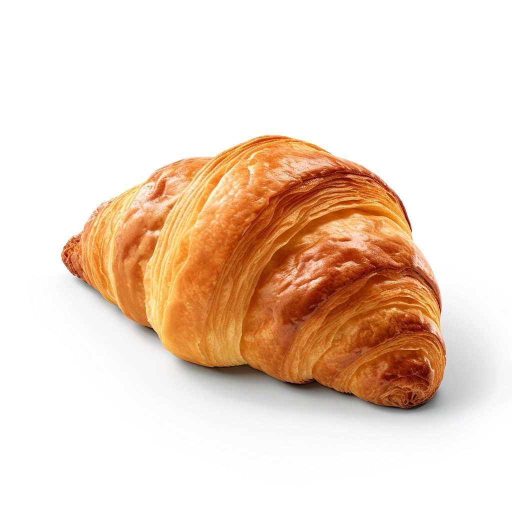
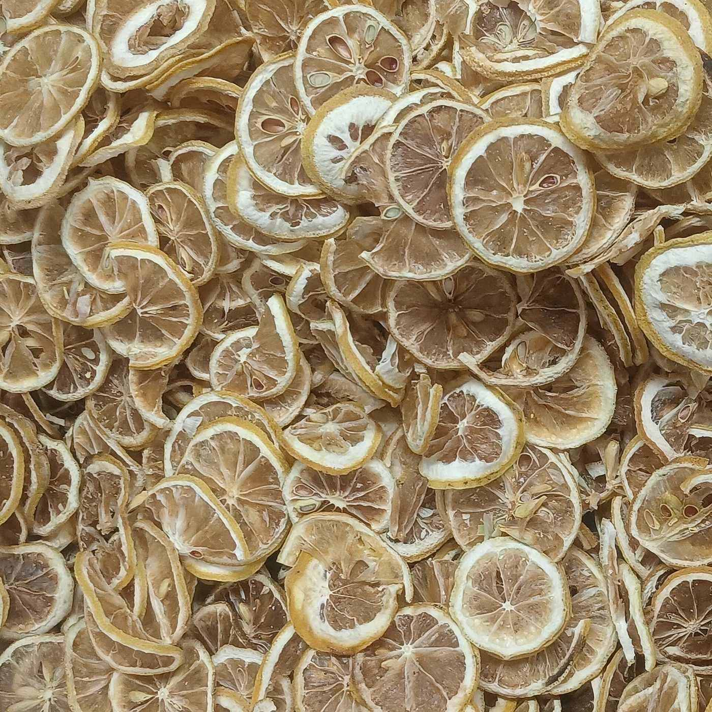

制作側の連想
ローイングマシンの部位を、配置図にしてみる
ローイングマシンの部位を図にしたもので、制作側の連想です。お店の理念・由来とは無関係で、実際の機器の仕様を示すものでもありません。 六つの部位に番号をふり、上の図と並べています。
凡例
六つの部位
- 1ハンドル両手でにぎって引く、横長の棒の部分。チェーンにつながっている。
- 2モニター時間や距離などを表示する、小さな画面のついた部分。
- 3フライホイールチェーンを引くと回る、大きな円盤。まわりを網状のカバーが囲む。
- 4シートレールの上をすべって前後する、腰かけの部分。
- 5フットレスト足をのせて固定する、傾いた板とベルトの部分。
- 6レールシートが前後にすべるための、まっすぐな細長い台。
写真(イメージ)
写真(イメージ)




写真はイメージです。お店のものではありません。
ご案内
お店のこと(確認できたものだけ)
| 所在地 | 〒997-0815 山形県鶴岡市外内島信州川原15−１５ |
|---|---|
| 電話 | 準備中 |
| 営業時間 | 準備中 |
| 定休日 | 準備中 |
| ご予約 | 準備中 |
| 駐車場 | 準備中 |
| SNS | Instagram @heart.peace2019 |